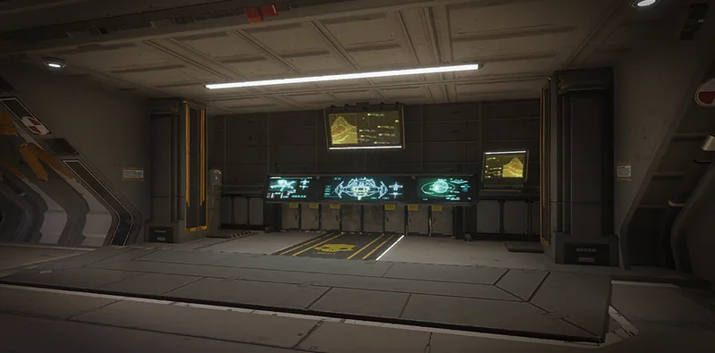

捐赠 Access 执照

“Purchases permanent access to 弹药 provided by the “支援 Our Heroes” fund, which allows patriotic family members to donate supplies to their loved ones in the field.
— 舰船管理终端
捐赠 Access 执照 (DAL) is a Tier 1 舰船模块 升级 for the 爱国行政中心.
升级效果
支援武器 deploy with the 最大 number of carriable magazines.
- Without this module 升级, all 支援武器 are deployed with 50% / half number of spare magazines / ammunition.
代价
受影响的战略配备
效果
| 支援武器 | 换弹 Count | DAL 换弹 Count | % Change |
|---|---|---|---|
| MG-43 机枪 | 2 | 3 | 50 |
| M-105 盟友 | 2 | 3 | 50 |
| APW-1 反器材步枪 | 5 | 8 | 60 |
| FLAM-40 火焰喷射器 | 3 | 5 | 67 |
| MG-206 重机枪 | 1 | 2 | 100 |
| RS-422 磁轨炮 | 10 | 20 | 100 |
| GL-21 榴弹发射器 | 2 | 3 | 50 |
| LAS-98 激光大炮 | ??? | 2 | ??? |
| TX-41 Sterilizer | 2 | 4 | 100 |
| GL-52 De-Escalator | 32 | 40 | 25 |
| PLAS-45 Epoch | 2 | 4 | 100 |
| S-11 Speargun | ??? | 12 | ??? |
| CQC-20 Breaching Hammer | ??? | 7 | ??? |
变更历史
补丁
描述
1.000.000
2024-02-08
Released with the game.